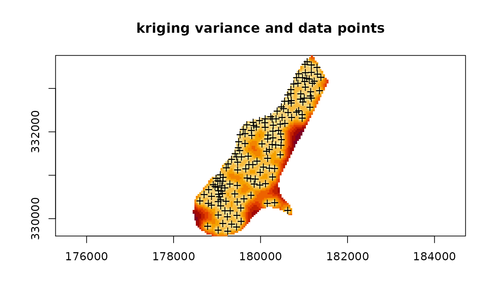

image.RdImage gridded data, held in a data frame, keeping the right aspect ratio for axes, and the right cell shape
# S3 method for data.frame image(x, zcol = 3, xcol = 1, ycol = 2, asp = 1, ...) xyz2img(xyz, zcol = 3, xcol = 1, ycol = 2, tolerance = 10 * .Machine$double.eps)
| x | data frame (or matrix) with x-coordinate, y-coordinate, and z-coordinate in its columns |
|---|---|
| zcol | column number or name of z-variable |
| xcol | column number or name of x-coordinate |
| ycol | column number or name of y-coordinate |
| asp | aspect ratio for the x and y axes |
| ... | arguments, passed to image.default |
| xyz | data frame (same as |
| tolerance | maximum allowed deviation for coordinats from being exactly on a regularly spaced grid |
image.data.frame plots an image from gridded data, organized
in arbritrary order, in a data frame. It uses xyz2img and
image.default for this. In the S-Plus version, xyz2img
tries to make an image object with a size such that it will plot with
an equal aspect ratio; for the R version, image.data.frame uses the
asp=1 argument to guarantee this.
xyz2img returns a list with components: z, a matrix
containing the z-values; x, the increasing coordinates of the
rows of z; y, the increasing coordinates of the columns
of z. This list is suitable input to image.default.
I wrote this function before I found out about levelplot,
a Lattice/Trellis function that lets you control the aspect ratio by
the aspect argument, and that automatically draws a legend, and
therefore I now prefer levelplot over image. Plotting points
on a levelplots is probably done with providing a panel function and
using lpoints.
(for S-Plus only -- ) it is hard (if not impossible) to get exactly right
cell shapes (e.g., square for a square grid) without altering the size of
the plotting region, but this function tries hard to do so by extending
the image to plot in either x- or y-direction. The larger the grid, the
better the approximation. Geographically correct images can be obtained
by modifiying par("pin"). Read the examples, image a 2 x 2 grid,
and play with par("pin") if you want to learn more about this.
Edzer Pebesma
library(sp) data(meuse) data(meuse.grid) g <- gstat(formula=log(zinc)~1,locations=~x+y,data=meuse,model=vgm(1,"Exp",300)) x <- predict(g, meuse.grid)#> [using ordinary kriging]image(x, 4, main="kriging variance and data points")